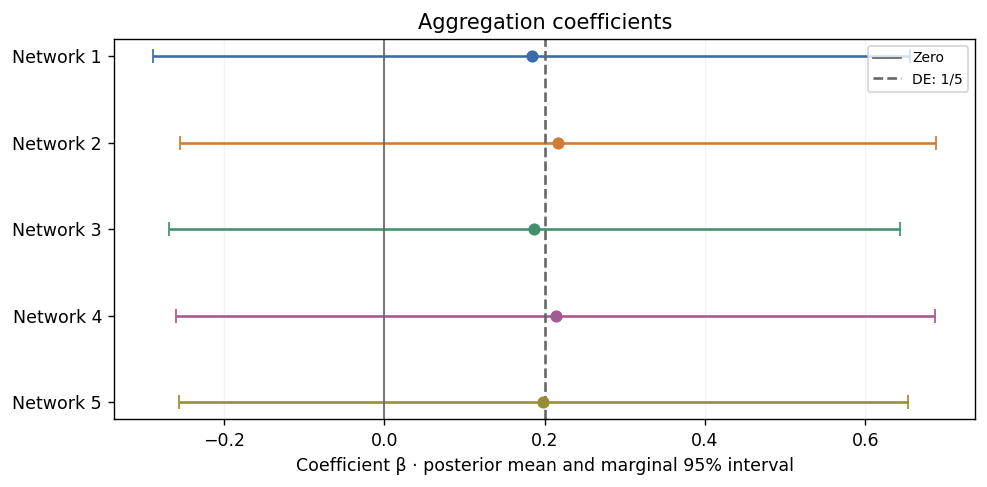
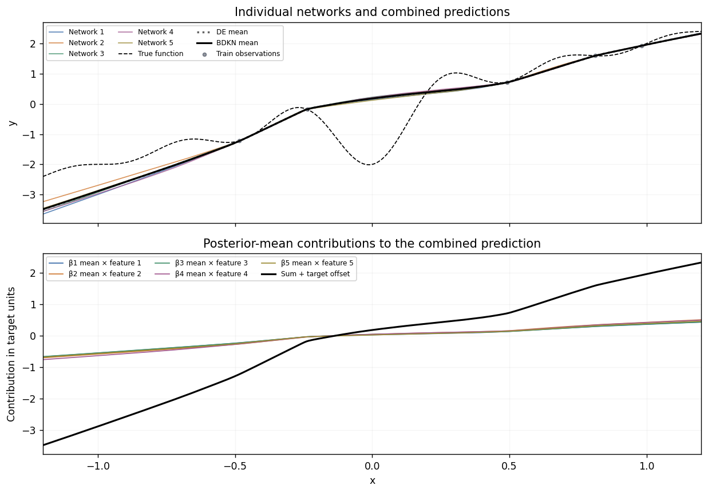
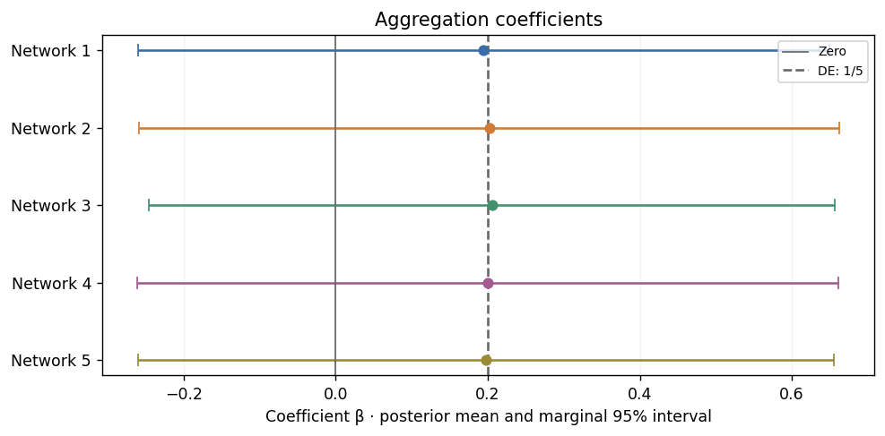
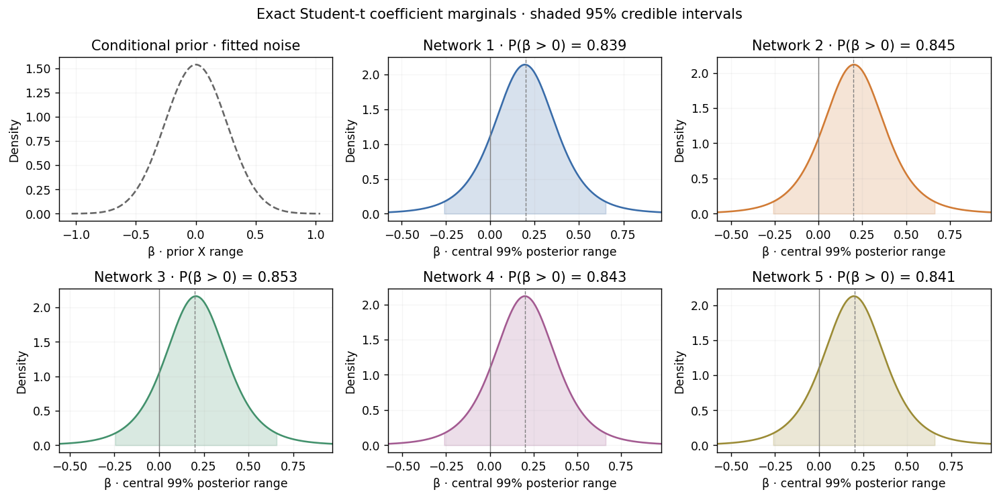
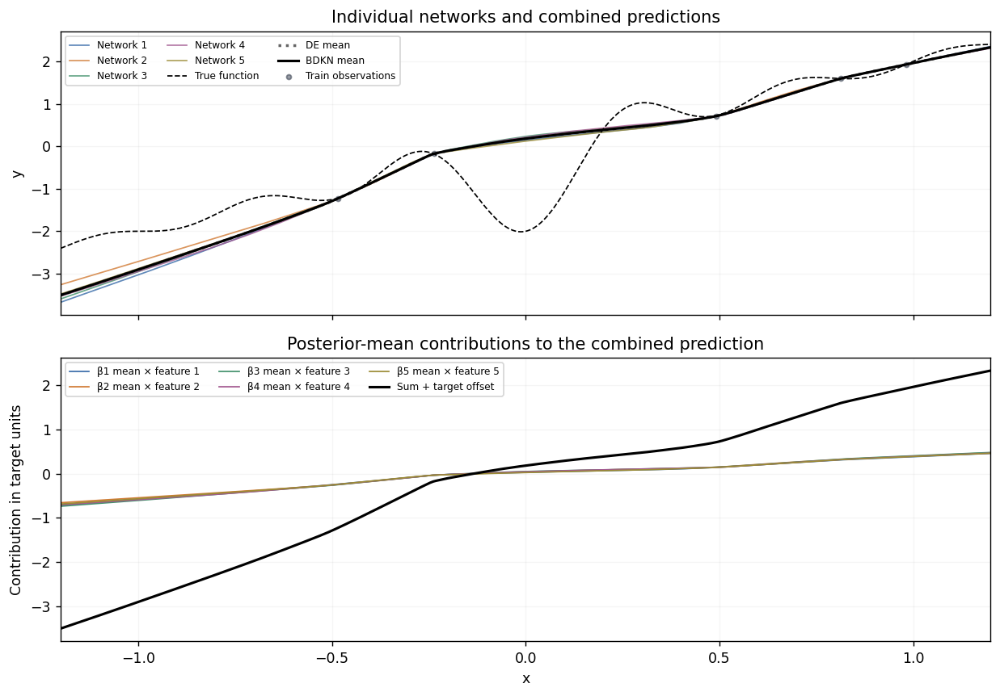
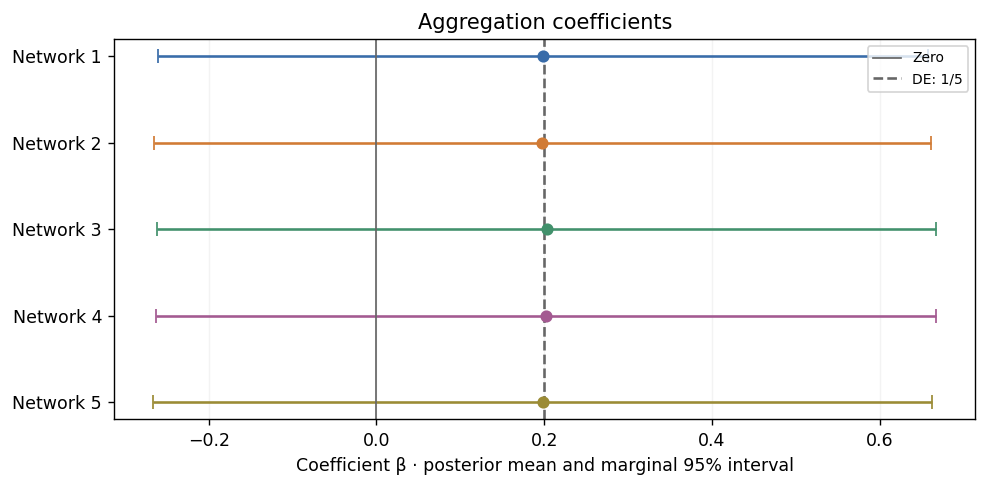
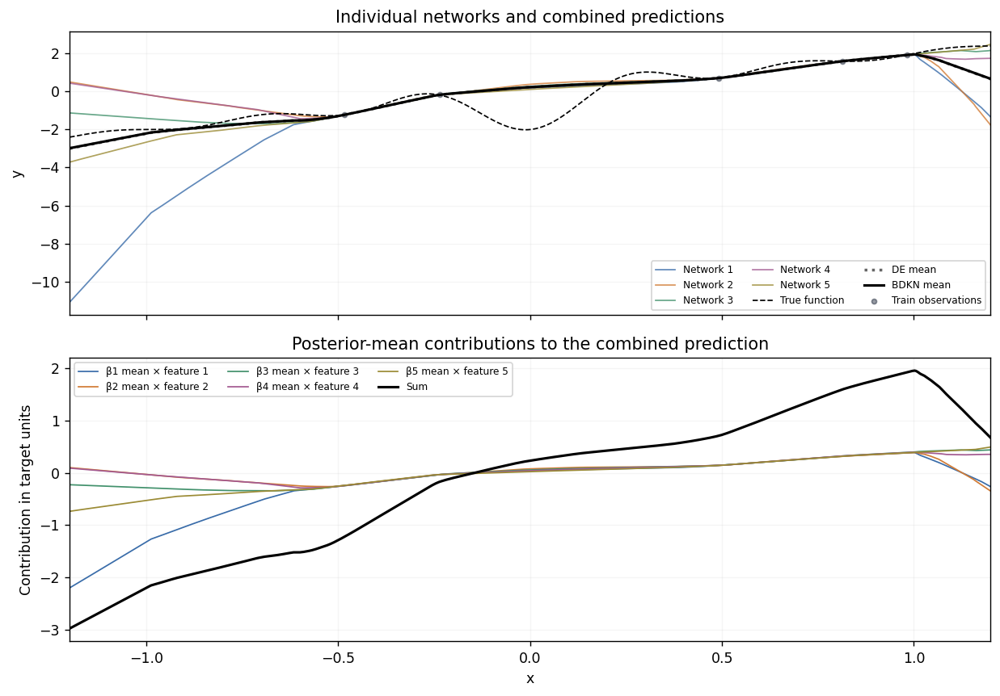
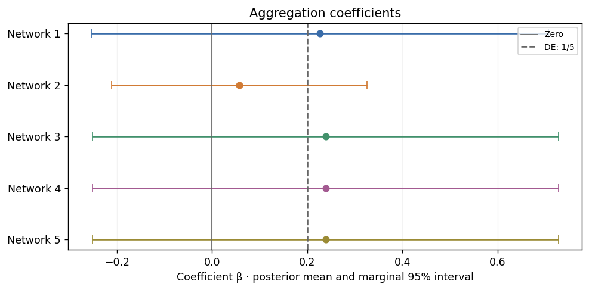
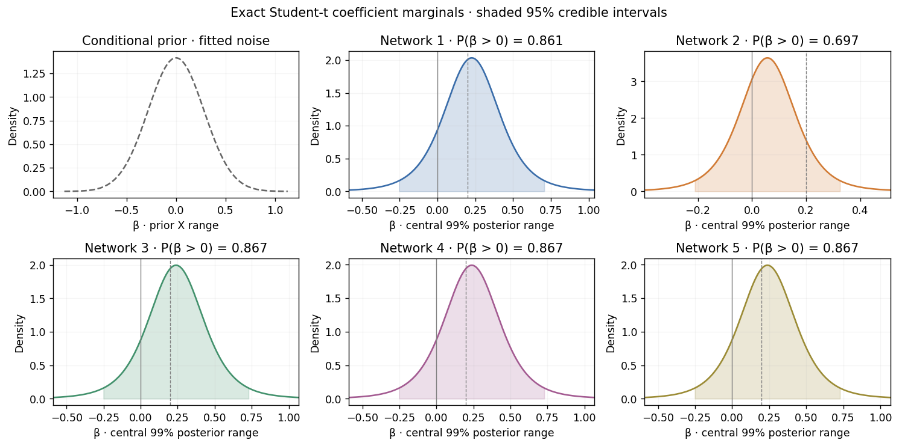
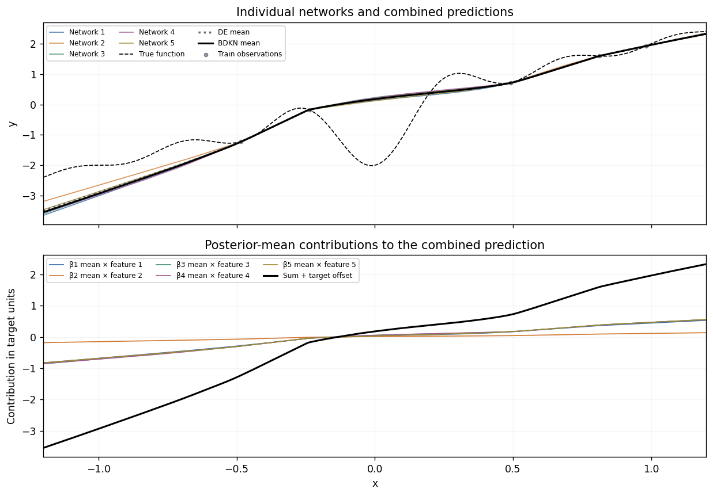

Regression comparison
Download resultsAggregation weights
Coefficients can be negative and need not sum to one. Intervals describe coefficient uncertainty; the dashed reference is DE’s fixed 1/H weight.
BDKN



Each density panel uses its own X range for readability; coefficient intervals above share a common axis. Prior reference conditions on fitted noise. Contribution shares use held-out inputs; test targets are used only for scoring.
| Network | β mean | 95% low | 95% high | P(β > 0) | Contribution share | Test RMSE | Test NLL |
|---|---|---|---|---|---|---|---|
| 1 | 0.18378 | -0.28768 | 0.65525 | 0.81884 | 0.18558 | 0.77438 | 14831.39553 |
| 2 | 0.21712 | -0.25401 | 0.68825 | 0.85530 | 0.21236 | 0.72161 | 5870.93193 |
| 3 | 0.18694 | -0.26881 | 0.64268 | 0.83002 | 0.18791 | 0.77327 | 3837.63935 |
| 4 | 0.21394 | -0.25925 | 0.68713 | 0.85120 | 0.21803 | 0.78641 | 25124.08623 |
| 5 | 0.19829 | -0.25603 | 0.65261 | 0.84357 | 0.19610 | 0.73920 | 2290.88784 |
Functional repulsion · BDKN



Each density panel uses its own X range for readability; coefficient intervals above share a common axis. Prior reference conditions on fitted noise. Contribution shares use held-out inputs; test targets are used only for scoring.
| Network | β mean | 95% low | 95% high | P(β > 0) | Contribution share | Test RMSE | Test NLL |
|---|---|---|---|---|---|---|---|
| 1 | 0.19468 | -0.26043 | 0.64978 | 0.83920 | 0.19704 | 0.78108 | 31999.42592 |
| 2 | 0.20199 | -0.25866 | 0.66264 | 0.84458 | 0.19763 | 0.72289 | 21295.32604 |
| 3 | 0.20561 | -0.24559 | 0.65681 | 0.85289 | 0.20719 | 0.78177 | 19516.32282 |
| 4 | 0.20010 | -0.26056 | 0.66077 | 0.84254 | 0.20273 | 0.78132 | 12684.98001 |
| 5 | 0.19763 | -0.25983 | 0.65508 | 0.84135 | 0.19541 | 0.74287 | 12915.77963 |
Weight repulsion · BDKN


Each density panel uses its own X range for readability; coefficient intervals above share a common axis. Prior reference conditions on fitted noise. Contribution shares use held-out inputs; test targets are used only for scoring.
| Network | β mean | 95% low | 95% high | P(β > 0) | Contribution share | Test RMSE | Test NLL |
|---|---|---|---|---|---|---|---|
| 1 | 0.19876 | -0.26027 | 0.65780 | 0.84184 | 0.31818 | 2.32528 | 1160073.38242 |
| 2 | 0.19772 | -0.26566 | 0.66109 | 0.83865 | 0.13422 | 1.20581 | 15557.35363 |
| 3 | 0.20285 | -0.26182 | 0.66753 | 0.84362 | 0.18840 | 0.73066 | 11894.16158 |
| 4 | 0.20211 | -0.26274 | 0.66696 | 0.84274 | 0.14366 | 1.00444 | 8311.33166 |
| 5 | 0.19858 | -0.26587 | 0.66303 | 0.83909 | 0.21555 | 0.71469 | 25150.54431 |
First-order repulsion · BDKN



Each density panel uses its own X range for readability; coefficient intervals above share a common axis. Prior reference conditions on fitted noise. Contribution shares use held-out inputs; test targets are used only for scoring.
| Network | β mean | 95% low | 95% high | P(β > 0) | Contribution share | Test RMSE | Test NLL |
|---|---|---|---|---|---|---|---|
| 1 | 0.22673 | -0.25301 | 0.70647 | 0.86068 | 0.22762 | 0.77572 | 11619.92348 |
| 2 | 0.05730 | -0.21083 | 0.32542 | 0.69680 | 0.05551 | 0.71385 | 4217.40584 |
| 3 | 0.23883 | -0.25054 | 0.72820 | 0.86745 | 0.24008 | 0.78206 | 32524.88026 |
| 4 | 0.23852 | -0.25108 | 0.72812 | 0.86708 | 0.24200 | 0.78844 | 30719.42472 |
| 5 | 0.23844 | -0.25118 | 0.72807 | 0.86700 | 0.23479 | 0.74099 | 19232.19801 |